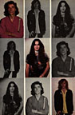
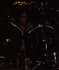

"A hit?" Lee looks genuinely puzzled. "We don't have any hits."
Fourteen thousand screaming Canucks packed right up to the concrete rafters of the Montreal Forum don't agree. Nor do the 6,000-plus frostbitten fans filing into the Palace Theatre from A1bany, New York's sub-freezing cold for two nights running. As far as they are concerned, Rush -- the Canadian power trio with ten years, a handful of U.S. gold records, and next to no radio airplay behind them -- have nine albums' worth of hits. including the six mini-epics on their most recent LP Permanent Waves (Mercury).
Rush fans, a rabid breed, have their own ways of breaking hits. In Montreal, a CHOM promotion director remarks that last December a representative from Rush's Canadian record distributor, Capitol, dropped off an advance tape of a track called "The Spirit of Radio" from the new album. The station's request lines were jammed for days by kids calling for the song, despite the fact that the Capitol rep took the tape back after only one play on the air.
But if Geddy Lee, blond cherubic guitarist Alex Lifeson, and lanky affable drummer/lyricist Neil Peart (now minus his handlebar mustache) dismiss the idea of a Rush radio hit as an improbable if not impossible dream, just how do they gauge their success? In record industry terms, it's a horde of multi-platinum, serious critical examination in all the right papers, and a place in rock's social register. For Rush, success seems to be the opportunity to cries-cross the country by bus, play nearly 150 concerts a year, and record ten-to-twenty minute songs full of tortuous rhythm changes, bombastic riffing, and lyrical excursions into philosophy and mythology without fear of interruption by management or record company. As one label exec told Geddy backstage in Albany, "you don't have to worry about anything. Your career has a life of its own."
"I think we achieved success a long time ago," asserts Lee, a soft-spoken expectant father of 26 with thick brown hair that hangs like a deep pile carpet down his back. "The fact that we can go out and tour for eight months and do exactly what we want to do and make the kind of records exactly the way we want to make them, that's my personal idea of success. And at the same time, we've each got our own homes [Lee's is in a suburb of Toronto, while the others -- Alex with his wife and two sons, Neil with his girlfriend and his young daughter -- live out in the surrounding countryside]. We've got cars. Nobody's starving and we're real comfortable."
Neil Peart, an articulate speaker and avid reader (he divided his time between an auto magazine and a Thomas Hardy novel in Albany), concurs. "I think independence is the key in our terms. Once we'd achieved concert success so we could choose to headline in certain places and tour as long as we wanted to, then for us we're set. Everything we wanted to do in life, we're able to do."
Permanent Waves overflows with that kind of self-confidence. A nearperfect marriage of heavy-metal rage and arty Britrock maneuvers directly descended from Yes and Genesis, the album not only finds guitarist Lifeson finally stepping out confidently from Jimmy Page's shadow and Lee sanding off some of the more intensively rough edges of his high rooster's crow, but it is Rush's most accessible offering to date without revealing the slightest hint of compromise. Unfazed by charges that they're holding the old line while the new wave rolls over rock, the band found a suitable irony in the album title Permanent Waves. "As far as I can see," offers Lee, "new wave, old wave, yellow wave -- it's all the same. The water doesn't come and go. The waves do."
 Appropriate logic, but when Toronto high school buddies Lee, Lifeson, and original drummer John Rutsey formed Rush in the Year of our Zeppelin 1969, few Canadian music moguls were buying. Lee remembers being fired from one local club gig because the band was playing so loud barmaids couldn't hear the beer orders. Cream, Jeff Beck, and other seminal British heavy metallurgists were making big FM noise, but it would be another five years before Rush could get their first album out and even then it was on their own Moon label because managers Ray Danniels and Vic Wilson had been turned down by every Canadian record company at least twice.
Things got only a little easier once Mercury released the Rush LP in America. Alex Lifeson -- a classical guitar aficionado who sheepishly admits he refused to take lessons when he was younger "because I thought it was all 'Mary-had-a-little-lamb' stuff' -- remembers being roundly booed offstage only once. "That was in Baltimore about five years ago. We played a show with Sha-Na-Na. It was like a greaseball dressup masquerade dance and it bordered on horribleness. They didn't like us at all."
But neither did radio programmers and the FM prejudice against Rush (implied in the song "The Spirit of Radio" -- "For the words of the profits/Are written on the studio walls") has only started to subside with Permanent Waves. Lee confesses that "at one point, it was what we played. Here was this band playing real raw stuff with a singer that had a real bizarre voice and were playing seven, eight, sometimes twenty minute tunes. I don't think we fitted into their plans."
Conversely, radio doesn't play a big part in Rush's plans. Ray Danniels admits he's been confronting his charges with the idea of a hit single for the eleven years he's been managing them. "They're no longer afraid of it," he says "but they don't go out of their way to make them either."
 "For us," insists Peart, "it's the audience, which is promotion on a one-to-one basis. And that's a predominant policy in every area of how we run the band. Programs, album covers, T-shirts -- it's all done with the assumption that we are fans. What would we like to see if we were going to a show?"
They'd probably like to see a near-two-hour performance featuring most of the new album, some of the earlier Zeppelinized numbers like "Working Man," and complete sagas like "2112" and both parts of the "Cygnus X-1" epic. That's not to mention a backdrop film to go with "Cygnus," the occasional flashpot, and musicianship tight enough to round up some heavy blues, a jazz break, a lyrical guitar passage, and a mighty metallic climax in one tenminute instrumental. And that's exactly what their fans get every night, for which Rush expect at least a little critical respect if not love and kisses. "But the difference," notes Peart, "is taking our work seriously, but not taking ourselves seriously."
The band certainly doesn't sit around between shows with furrowed brows, pondering the fate of the universe and how to put it to music. Whenever possible, after each show, Rush and their road crew head for a nearby ice hockey rink for a late-night game with real sticks (contributed by some friends on the Montreal Canadiens team), real uniforms, and real body checking. In warmer climes, they're fond of the miniauto race tracks in amusement parks. Even on stage, they're not above a good laugh. In the middle of "Natural Science," Geddy Lee actually plays the synthesizer with his ass -- sitting on the keyboard to create a thunderclap sound -- since his hands are too busy playing the bass. "We're not so serious that there can't be some humor in it, but" Lee reminds, "we're not comedians. "
Staunch isolationists in a business that thrives on the greasing of palms, Rush feel, as Peart explains, "there's enough justification in just doing it for ourselves and for the great number of people that relate to it." That includes Neil Peart's pet birds, who he claims sing along to "Xanadu" on the Farewell to Kings album. Geddy Lee, unfortunately, doesn't command as much respect in his house.
"My cats hate our music. They leave the room as soon as I put on one of our records. One of my cats, Max, if I put Kings on, he sits there until 'Cygnus' comes on. Then he splits."
{kind=link}
{kind=link}